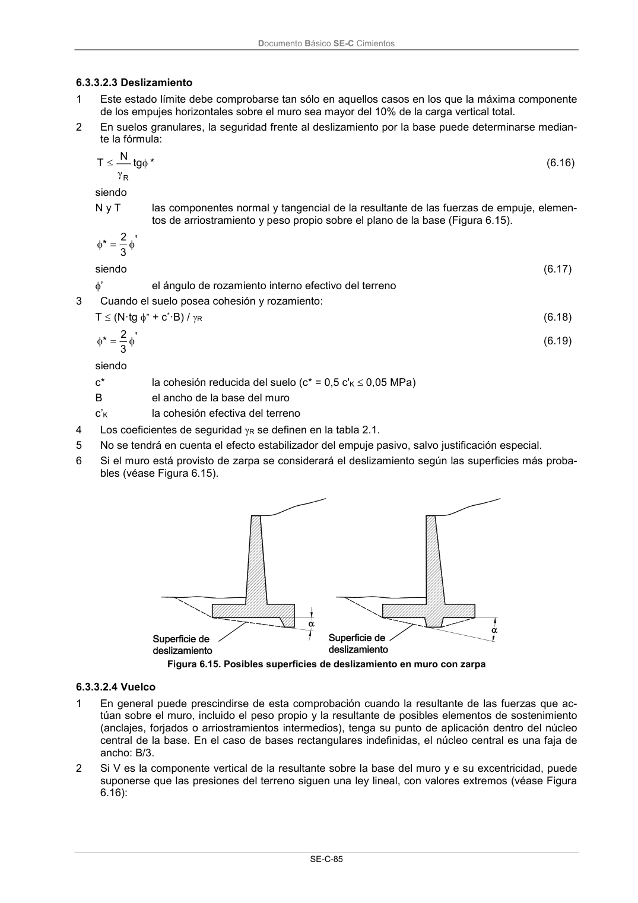

DB-SE-C · 6.3.3.2.4 Vuelco · versión 2019-12-20 · capa oficial
Formatos: JSON compacto · Markdown · PDF fuente
Ámbito del documento · texto del ámbito · documento y tablas
ID técnico a0190 · PDF pág. 90-91 · jerarquía no validada por persona · contrastado con el literal de la página 90 (candidato tipográfico); no validado por persona · padre: a0186
6.3.3.2.4 Vuelco 1 En general puede prescindirse de esta comprobación cuando la resultante de las fuerzas que ac- túan sobre el muro, incluido el peso propio y la resultante de posibles elementos de sostenimiento (anclajes, forjados o arriostramientos intermedios), tenga su punto de aplicación dentro del núcleo central de la base. En el caso de bases rectangulares indefinidas, el núcleo central es una faja de ancho: B/3. 2 Si V es la componente vertical de la resultante sobre la base del muro y e su excentricidad, puede suponerse que las presiones del terreno siguen una ley lineal, con valores extremos (véase Figura 6.16): Documento Básico SE-C Cimientos SE-C-86 B e 6 1 B V max (6.20) Si e = 0, B V (6.21) Si 0 y B V · 2 , 6 B e mín máx (6.22) Si e > 6 B se produciría el despegue de uno de los bordes, aumentando notablemente la tensión en otro borde. Figura 6.16. Estabilidad al vuelco 3 La estabilidad al vuelco se verificará con los criterios definidos en el capítulo 2, comparando los momentos de cálculo desestabilizantes y estabilizantes respecto de la arista exterior de la base de la zapata. 4 No se tendrá en cuenta el efecto estabilizador del empuje pasivo, salvo justificación especial.

PDF fuente redistribuible: copia fiel enlazada en esta página (SHA256 verificado).